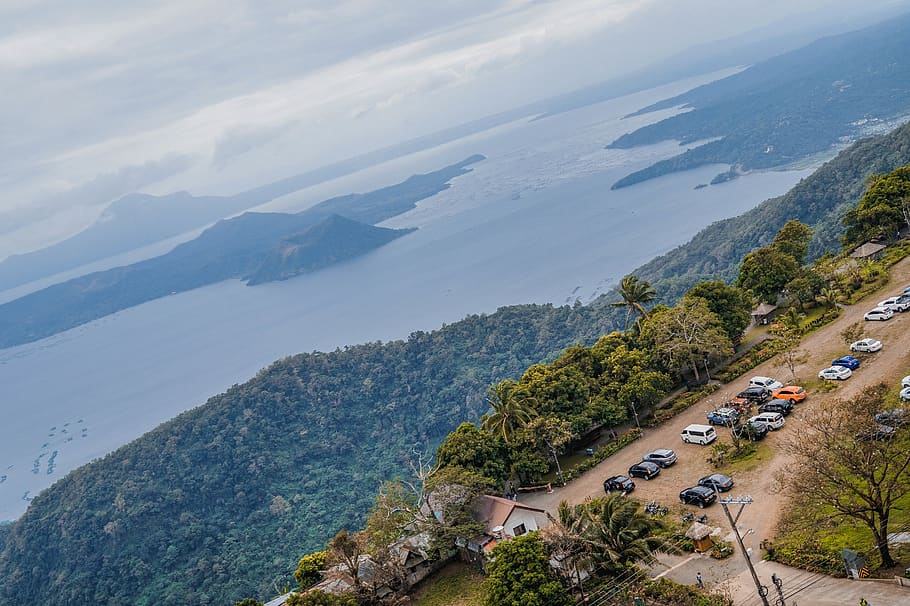
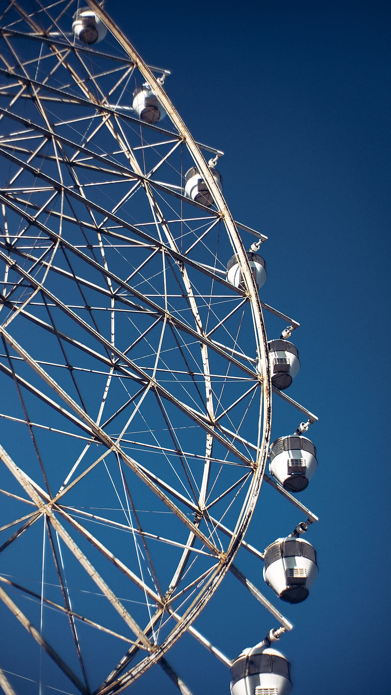

HOME BORACAY SIARGAO TAGAYTAY VIGAN
 | Top things to do in Tagaytay | |
| 1. Sky Ranch Theme Park | |
| 2. Picnic, Zipline and Horseback riding at Tagaytay Picnic Grove | |
| 3. Trek to Taal Volcano | |
| 4. Be ammazed at Museo Orlina | |
| 5. Visit the Nearby Caleruega Church |